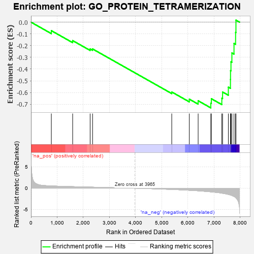
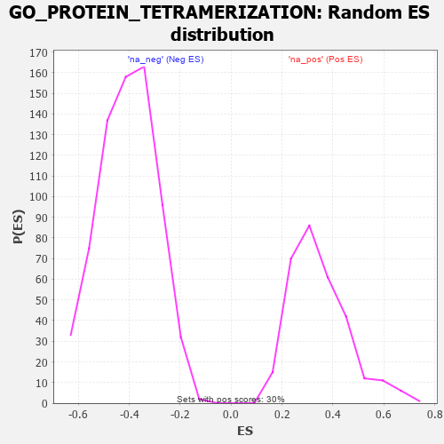

| | | Dataset | 7d |
| Phenotype | NoPhenotypeAvailable |
| Upregulated in class | na_neg |
| GeneSet | GO_PROTEIN_TETRAMERIZATION |
| Enrichment Score (ES) | -0.73076767 |
| Normalized Enrichment Score (NES) | -1.7943069 |
| Nominal p-value | 0.0 |
| FDR q-value | 0.017896263 |
| FWER p-Value | 0.468 |
Table: GSEA Results Summary

Fig 1: Enrichment plot: GO_PROTEIN_TETRAMERIZATION
Profile of the Running ES Score & Positions of GeneSet Members on the Rank Ordered List
| PROBE | GENE SYMBOL | GENE_TITLE | RANK IN GENE LIST | RANK METRIC SCORE | RUNNING ES | CORE ENRICHMENT | | 1 | CPSF6 | | | 778 | 0.538 | -0.0726 | No |
| 2 | CUTC | | | 1593 | 0.375 | -0.1573 | No |
| 3 | GNMT | | | 2261 | 0.266 | -0.2286 | No |
| 4 | OXA1L | | | 2355 | 0.252 | -0.2285 | No |
| 5 | GRIN1 | | | 5381 | -0.291 | -0.5952 | No |
| 6 | EVL | | | 6052 | -0.490 | -0.6564 | No |
| 7 | TRPM4 | | | 6390 | -0.612 | -0.6700 | No |
| 8 | CBY1 | | | 6874 | -0.851 | -0.6908 | Yes |
| 9 | HCN1 | | | 6895 | -0.865 | -0.6526 | Yes |
| 10 | SYCP1 | | | 7295 | -1.167 | -0.6480 | Yes |
| 11 | TRPM1 | | | 7324 | -1.197 | -0.5953 | Yes |
| 12 | TRPM3 | | | 7544 | -1.461 | -0.5542 | Yes |
| 13 | TRPA1 | | | 7625 | -1.608 | -0.4887 | Yes |
| 14 | PKD1 | | | 7628 | -1.611 | -0.4133 | Yes |
| 15 | TRPM6 | | | 7645 | -1.637 | -0.3384 | Yes |
| 16 | TRPM2 | | | 7680 | -1.712 | -0.2622 | Yes |
| 17 | TRPM7 | | | 7761 | -1.936 | -0.1813 | Yes |
| 18 | PKD2 | | | 7822 | -2.167 | -0.0871 | Yes |
| 19 | KCNC1 | | | 7835 | -2.249 | 0.0171 | Yes |
Table: GSEA details [plain text format]

Fig 2: GO_PROTEIN_TETRAMERIZATION: Random ES distribution
Gene set null distribution of ES for GO_PROTEIN_TETRAMERIZATION